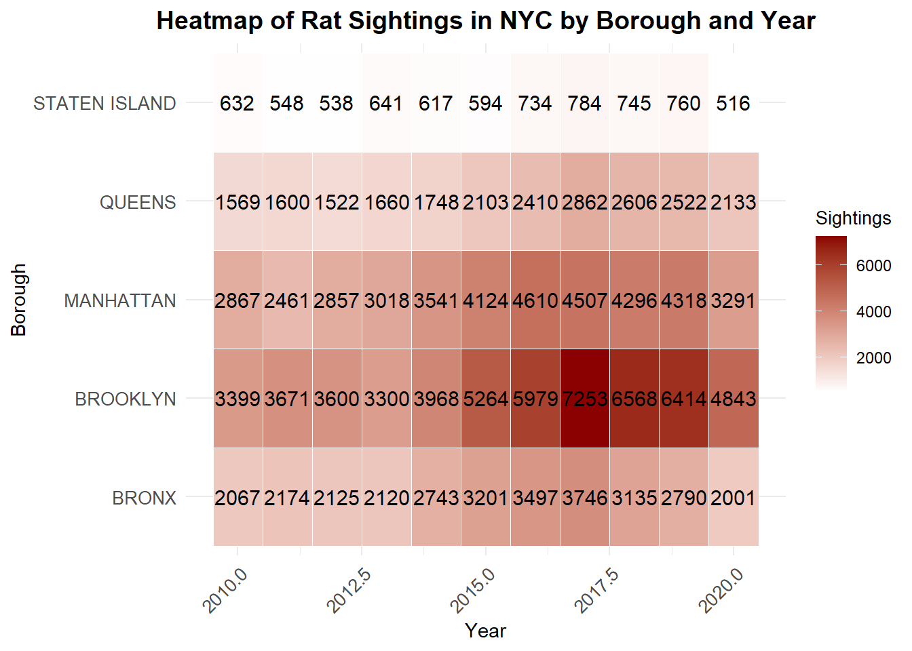
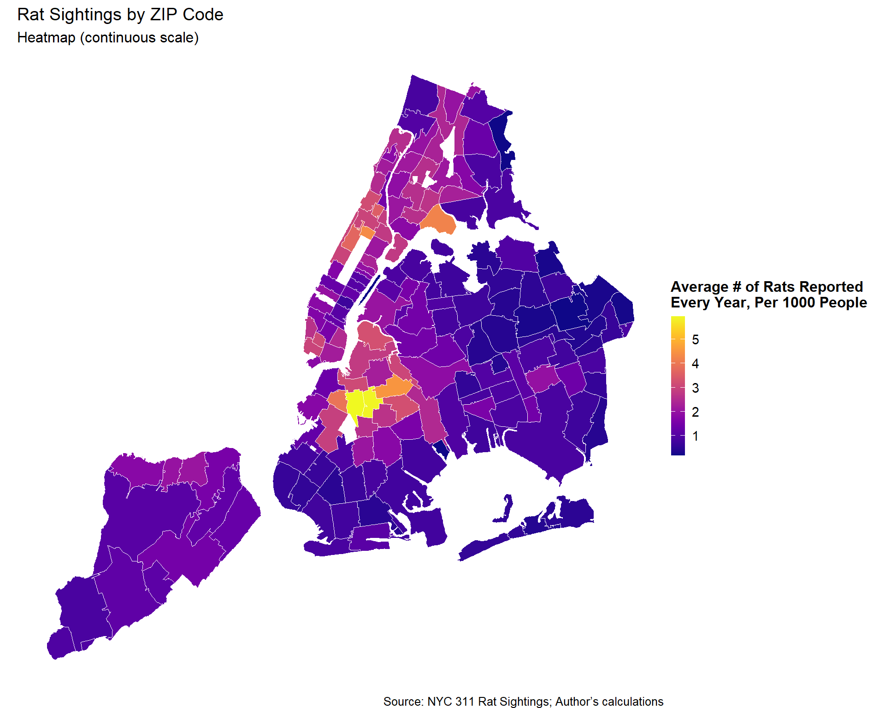
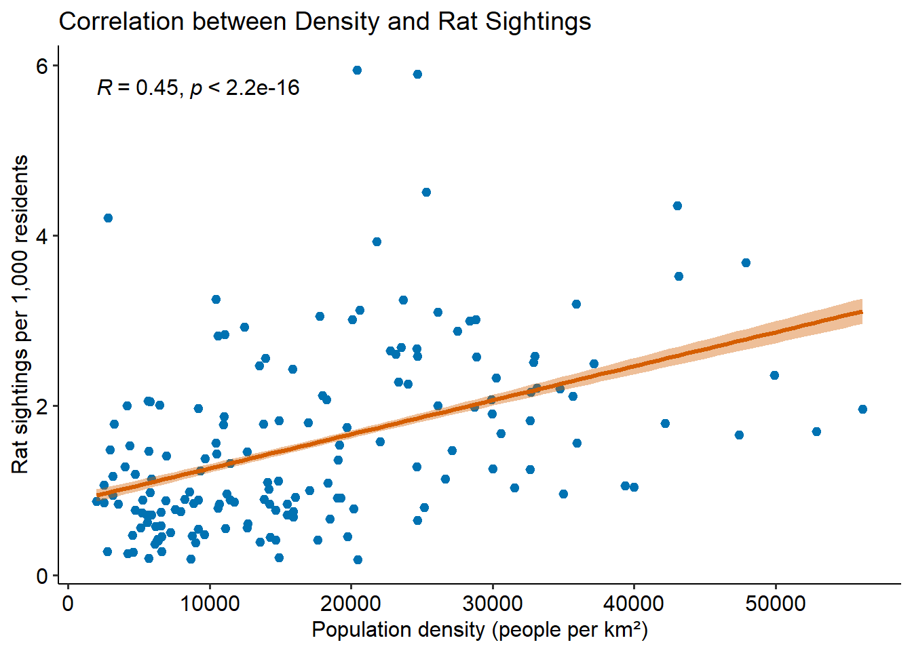
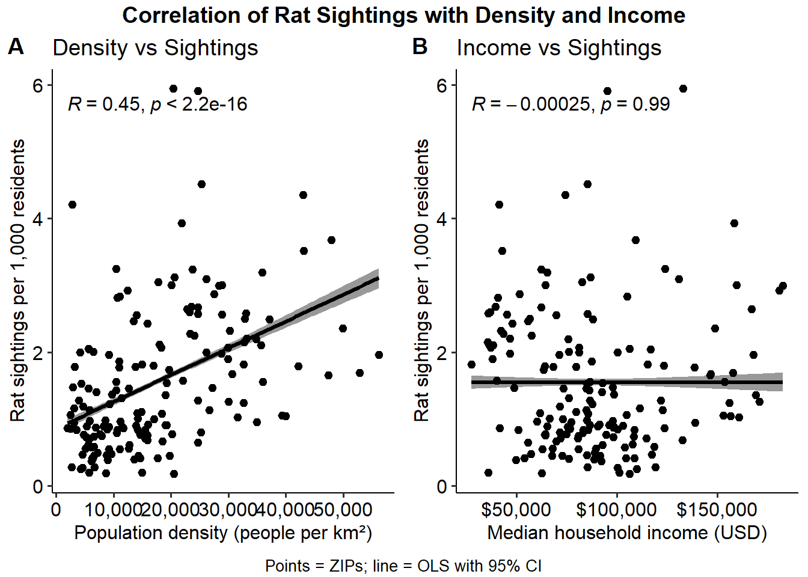

Urban Density And Rat Sightings: Evidence from New York City Zip Codes
Author
John Scheble
This report explores NYC rat sightings by ZIP, linking complaints to population, income, and area to get density-adjusted rates. Goal is to work with sightings per 1000 residents and population density to comapre neighborhoods fairly. Data is from NYC 3-1-1 Rat Complaints.
1Data Processing & Cleaning
The dataset was cleaned by standardizing date formats, extracting relevant time-based variables, and filtering out missing borough data to ensure accurate analysis.
2 Tile Heat Map by Borough by Year
#Summarize the sightings by boroughrats_summary <- rats_clean %>%group_by(borough, sighting_year) %>%summarise(sightings =n(), .groups ="drop")# Heatmapggplot(rats_summary, aes(x = sighting_year, y = borough, fill = sightings)) +geom_tile(color ="white") +geom_text(aes(label = sightings), color ="black", size =4) +scale_fill_gradient(low ="white", high ="darkred") +theme_minimal() +labs(title ="Heatmap of Rat Sightings in NYC by Borough and Year",x ="Year",y ="Borough",fill ="Sightings") +theme(plot.title =element_text(hjust =0.5, face ="bold", size =14),axis.text.x =element_text(angle =45, hjust =1, size =10),axis.text.y =element_text(size =10),legend.title =element_text(size =10),legend.text =element_text(size =9))

The heatmap shows the following:
Brooklyn and Manhattan have the most rat sightings.
There were major increases in rat reports during 2015-2017 throughout several boroughs.
Queens and Staten Island have fewer rat sightings overall.
Based on this, we can say that pest control teams should concentrate their efforts in the boroughs with the highest number of rats, mainly Brooklyn and Manhattan.
3 Rat Sightings Per Borough Over Time
# Line plotggplot(rats_summary, aes(x = sighting_year, y = sightings, color = borough)) +geom_line(linewidth =1) +geom_point() +theme_minimal() +labs(title ="Trend of Rat Sightings in NYC (2010-2020)",x ="Year",y ="Number of Sightings",color ="Borough")
The above graph illustrates the large and steady quantity difference in rat sightings between boroughs over time. We see that Brooklyn has consistently had the largest number of rat sightings for each year recorded, followed by Manhattan, Bronx, Queens and Staten Island Respectively. Over time, there hasnt been much change in this order, with queens slightly overtaking the bronx in 2020. Also, between 2013 and 2018 there seemed to be an large influx of rat sightings across the board (excluding Staten Island which remained relatively unchanged.)
#Remove extra rowmerged <- merged %>%filter(!ZIP %in%c("New York, NY"))
#Reclean First Rat Datasetrats_zip_time <- rats_clean %>%mutate(created =as.Date(created_date),Year =year(created),ZIP = stringr::str_extract(`Incident Zip`, "\\d{5}") ) %>%filter(!is.na(ZIP), ZIP !="00000")
#Sighting per year per bourough datasetrat_yearly <- rats_clean %>%mutate(created =as.Date(created_date),Year =year(created),ZIP = stringr::str_extract(`Incident Zip`, "\\d{5}") ) %>%filter(!is.na(ZIP), ZIP !="00000") %>%group_by(ZIP, Year, borough) %>%# <-- include borough heresummarise(Sightings =n(), .groups ="drop")
#Adding geometry to full datasetfull_dataset_sf <- full_dataset %>%left_join( zips_sf %>%select(ZIP, the_geom),by ="ZIP" ) %>%st_as_sf()full_dataset_sf <- full_dataset_sf %>%filter(!ZIP %in%c(11001, 11040, 11249))
#Calculating area of zip codes in sqft, miles, sqkm, and then pop densityfull_dataset_sf <-st_transform(full_dataset_sf, 2263)full_dataset_sf <- full_dataset_sf %>%mutate(area_sqft =as.numeric(st_area(the_geom)), # square feetarea_sqmi = area_sqft / (5280^2), #Square Milesarea_sqkm = area_sqft /10.7639/1e6, #square kmpop_density_sqmi = Population / area_sqmi, #people per square milepop_density_sqkm = Population / area_sqkm #people per square km )
4 Choropleth Map of Sightings
#Create heatmap with zip plottingif (!inherits(full_dataset_sf, "sf")) { full_dataset_sf <-st_as_sf(full_dataset_sf, wkt ="the_geom", crs =4326)}full_dataset_sf_plot <-st_transform(full_dataset_sf, 3857)metric <-"Sightings_per_1000_per_Year"p_cont <-ggplot(full_dataset_sf_plot) +geom_sf(aes(fill = .data[[metric]]), color ="white", linewidth =0.2) +scale_fill_viridis(option ="C", direction =1,na.value ="grey90",name =label_wrap(30)("Average # of Rats Reported Every Year, Per 1000 People") ) +labs(title ="Rat Sightings by ZIP Code",subtitle ="Heatmap (continuous scale)",caption ="Source: NYC 311 Rat Sightings; Author’s calculations" ) +theme_void(base_size =12) +theme(legend.title =element_text(size =12, face ="bold"), # bigger titlelegend.text =element_text(size =11), # bigger labelslegend.key.width =unit(0.4, "cm"), # shrink key widthlegend.key.height =unit(0.8, "cm") # taller key )
p_cont # <- simply print the ggplot object

Rat sightings per 1,000 residents by ZIP
The above heat map illustrates exactly where rat sightings are in the 5 bouroughs. It is calculated by averaging total rat calls by the 10 years the data was collected, then adjusting per 1000 people in order to standardize for population.
5 Regression Model Results
dat <- full_dataset_sf |>st_drop_geometry() |>mutate(pop_density_k = pop_density_sqkm /1000, # per 1,000 people/km²Median_Income = Median_Income, borough =fct_relevel(borough, "BRONX") # pick your reference explicitly )m0 <-lm(Sightings_per_1000_per_Year ~ Median_Income + pop_density_k, data = dat)mFE <-lm(Sightings_per_1000_per_Year ~ Median_Income + pop_density_k + borough, data = dat)modelsummary(list("Baseline"= m0, "Borough FE"= mFE),vcov ="HC3", # robust SEsstatistic ="({std.error})",stars =TRUE,coef_map =c("(Intercept)"="Intercept","Median_Income"="Median income (per $1k)","pop_density_k"="Pop. density (per 1k/km²)" ),gof_map =c("nobs","r.squared","adj.r.squared","AIC","BIC","rmse"),output ="markdown")
Baseline
Borough FE
+ p < 0.1, * p < 0.05, ** p < 0.01, *** p < 0.001
Intercept
0.972***
1.352***
(0.252)
(0.374)
Median income (per $1k)
-0.000
-0.000
(0.000)
(0.000)
Pop. density (per 1k/km²)
0.040***
0.029**
(0.006)
(0.011)
Num.Obs.
165
165
R2
0.197
0.301
R2 Adj.
0.187
0.274
RMSE
0.95
0.89
The results from regression shows that population density is positively associated with complaint rates. In the baseline model, a 1,000 person/km^2 increase in density predicts +0.040 additional sightings per 1,000 residents per year. When you add Boroughs as fixed effects, this effect by population density decreases to 0.029. Median income is indistinguishable from zero across models, and is not statistically signifigant. Adding borough indicators imrpoved the fit from r: 0.197 to 0.301. Estimates are descriptive.
#Filter and create new dataset with key columnszips_keep <-unique(full_dataset_sf$ZIP)rats_filtered <- rat_yearly %>%filter(ZIP %in% zips_keep)zip_density <- full_dataset_sf %>%st_drop_geometry() %>%select(ZIP, Sightings_per_1000_per_Year, pop_density_sqkm, Median_Income)rats_with_density <- rats_filtered %>%left_join(zip_density, by ="ZIP")
6 Correlation Scatterplot
#Correlation scatterplotggscatter( rats_with_density,x ="pop_density_sqkm",y ="Sightings_per_1000_per_Year",add ="reg.line",conf.int =TRUE,color ="#0072B2", add.params =list(color ="#D55E00", linewidth =1.1),xlab ="Population density (people per km²)",ylab ="Rat sightings per 1,000 residents",title ="Correlation between Density and Rat Sightings") +stat_cor(method ="pearson", label.x.npc ="left", label.y.npc ="top") +theme_pubr(base_size =12) +theme(legend.position ="none")

Denser ZIP codes report more rat sightings per capita. The relationship is moderate and positive (R = 0.45), consistent with the fitted line and confidence band. Dispersion widens at higher densities, so effects are not uniform across neighborhoods.
7 Correlation of Sightings with Density vs Income
#1st plot density vs sightingsp_density <-ggscatter( rats_with_density,x ="pop_density_sqkm",y ="Sightings_per_1000_per_Year",add ="reg.line",conf.int =TRUE,xlab ="Population density (people per km²)",ylab ="Rat sightings per 1,000 residents",title ="Density vs Sightings") +stat_cor(method ="pearson", label.x.npc ="left", label.y.npc ="top") +scale_x_continuous(labels =label_comma()) +theme_pubr(base_size =12) +theme(legend.position ="none")#2nd plot Income vs Sightingsp_income <-ggscatter( rats_with_density,x ="Median_Income",y ="Sightings_per_1000_per_Year",add ="reg.line",conf.int =TRUE,xlab ="Median household income (USD)",ylab ="Rat sightings per 1,000 residents",title ="Income vs Sightings") +stat_cor(method ="pearson", label.x.npc ="left", label.y.npc ="top") +scale_x_continuous(labels =label_dollar(accuracy =1)) +theme_pubr(base_size =12) +theme(legend.position ="none")# Sie by SIde for dramatic effectpaired <-ggarrange( p_density, p_income,ncol =2, nrow =1,labels =c("A", "B"),align ="hv")annotate_figure( paired,top =text_grob("Correlation of Rat Sightings with Density and Income",face ="bold", size =14),bottom =text_grob("Points = ZIPs; line = OLS with 95% CI", size =10))

Panel A shows a clear, positive association: denser ZIPs tend to report more rat sightings per capita. The spread widens at higher densities (fan shape), so variance is larger in dense areas—reason to use robust SEs in regressions. Panel B is essentially flat: income is not correlated with sightings in these data (R ≈ 0, p ≈ 0.99). Any relationship between income and complaints is either negligible or swamped by other factors like density, building stock, or reporting behavior.
This map highlights where sightings are unusually high or low after accounting for density. Dark purples represent ZIPs that have larger than expected complaint rates given how dense they are, while oranges mark places that report less than expected. Clustering suggests localized conditions like building stock, sanitation practices, enforcement, or reporting behavior influence sightings instead of density alone.